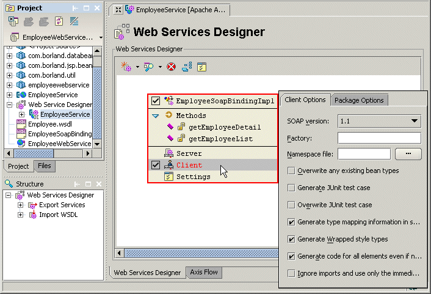

This is a feature of JBuilder Enterprise
Although it's useful to learn about the technologies behind web services, JBuilder provides designers, wizards, and tools for quickly developing and consuming web services. JBuilder uses the selected web services toolkit to enable projects for web services, import services, and export Java classes and Enterprise JavaBeans as web services.
Web services features in JBuilder, which vary according to the toolkit selected, include:

For more information, see:
Developing Web Services: Introduction
Web services samples: <jbuilder>/samples/webservices/